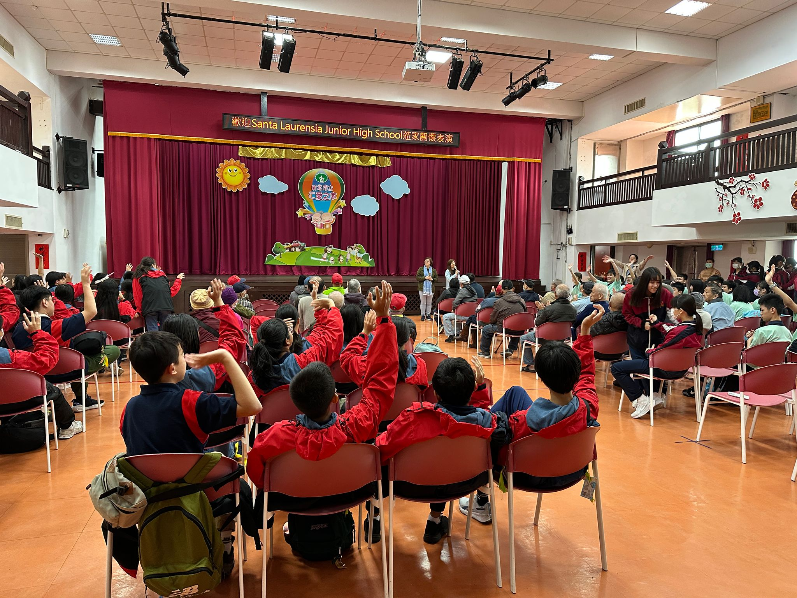

Dalam pelajaran agama saya diberikan tugas untuk MENDALAMI PANGGILAN SEBAGAI MURID YESUS DAN KELAHIRAN GEREJA
Saya melakukan perjalanan community service saya di Taiwan, Keelung untuk kakek - nenek disana. Saya menjadi ketua panitia community service tersebut dan sejak berbulan-bulan sebelum acara dilaksanakan, saya sudah mempersiapkan semua acara yang akan dilakukan di hari-h. Mulai dari drama, senam lansia, pemberian lukisan dan menyanyi bersama. Saya membuat kegiatan-kegiatan tersebut agar kami bisa menghibur kakek-nenek tersebut dan mengajak mereka melakukan olahraga singkat. Menurut saya, tujuan ini sangat tercapai karena saat acara ini dijalankan, kakek nenek disana semuanya aktif berpartisipasi dan mempunyai senyum yang sangat lebar.
Selama mengikuti edutrip, aku mengalami banyak hal yang membuat aku harus menyangkal diri dan memanggul salib sebagai murid Yesus. Ada saatnya aku merasa ingin mengikuti ego sendiri, seperti saat merasa lelah dan ingin mengeluh atau tidak mengikuti aturan yang diberikan panitia. Namun aku sadar, sebagai murid Yesus, aku harus belajar taat, sabar, dan tetap menjadi teladan dalam hal kecil sekalipun. Memang tidak mudah, tapi ketika aku mencoba menyelesaikan masalah dengan mengandalkan Yesus—dengan berdoa dan menenangkan diri terlebih dahulu—aku merasa lebih kuat dan damai. Pengalaman ini mengajarkanku bahwa mengikuti Yesus bukan hanya saat di gereja, tapi juga dalam kehidupan sehari-hari, termasuk saat edutrip.
Selama edutrip, aku mengunjungi Holy Family Catholic Church, sebuah gereja dengan desain modern yang terang dan terbuka, dikelilingi kaca-kaca besar yang menciptakan suasana damai dan khusyuk. Saat misa, aku melihat umat sangat aktif dan penuh semangat, terutama banyak anak muda yang terlibat sebagai petugas liturgi. Gereja ini didirikan untuk melayani komunitas Katolik yang berkembang di daerah tersebut, dan sekarang menjadi pusat kegiatan iman keluarga-keluarga Katolik. Jika dibandingkan dengan Gereja Santo Laurensius yang biasa aku kunjungi setiap Rabu, Holy Family terasa lebih modern dalam desain dan suasana misa yang dinamis, sedangkan Santo Laurensius memiliki nuansa klasik yang sakral, dengan struktur misa yang lebih teratur dan tenang.